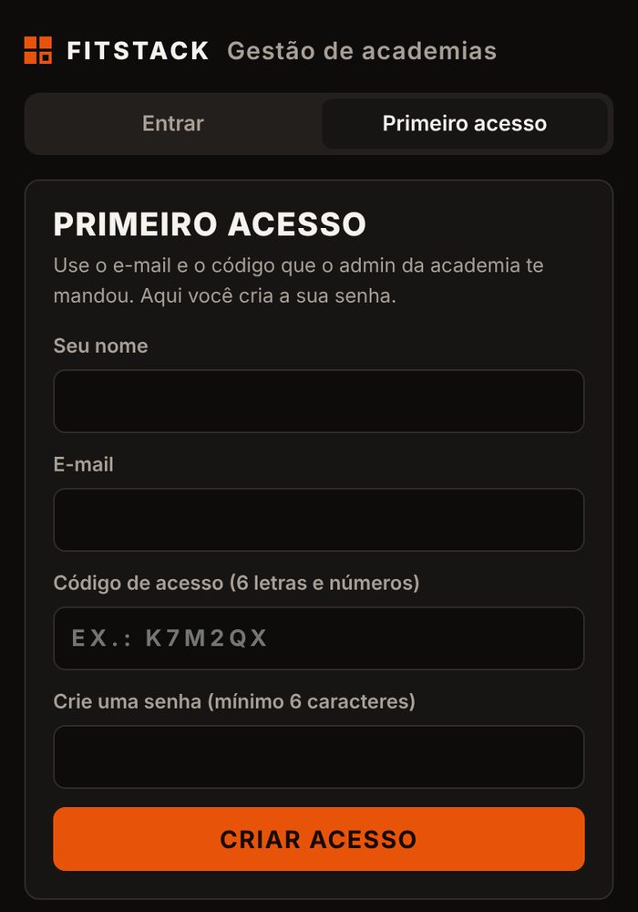
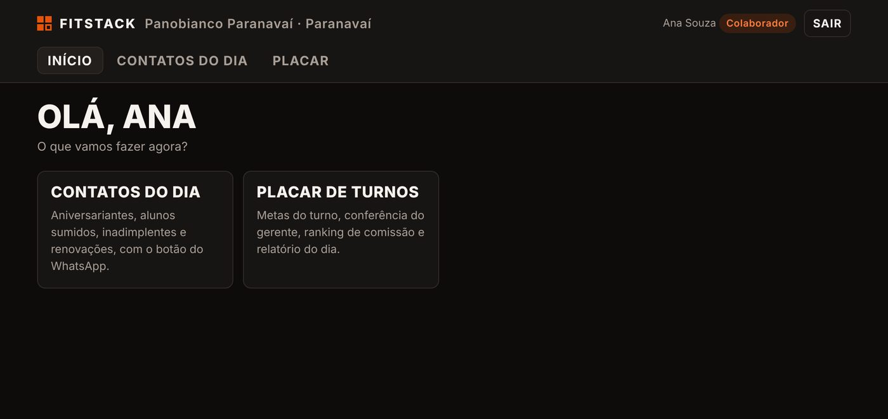
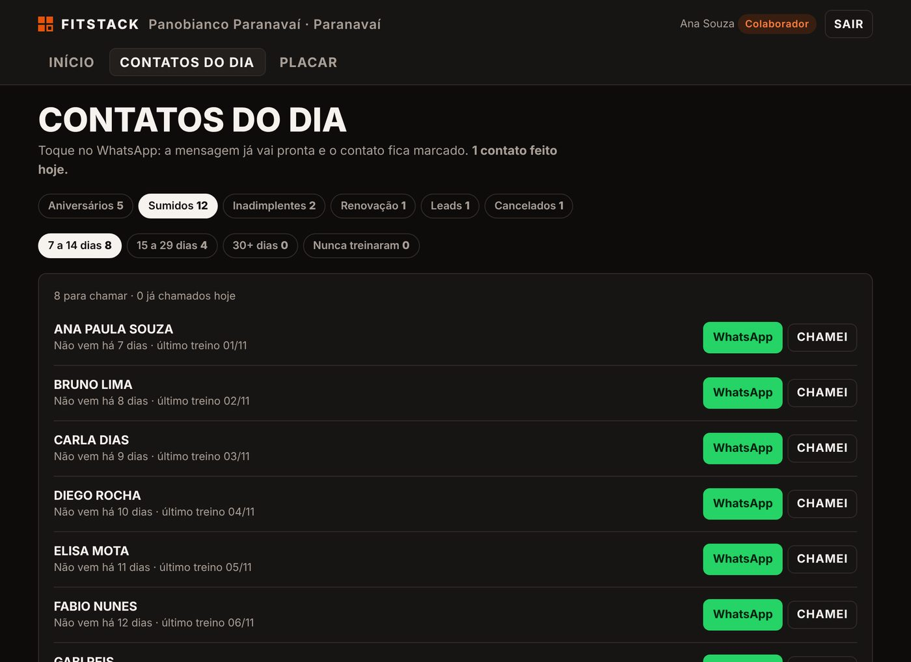
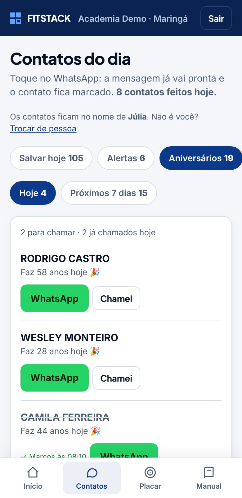
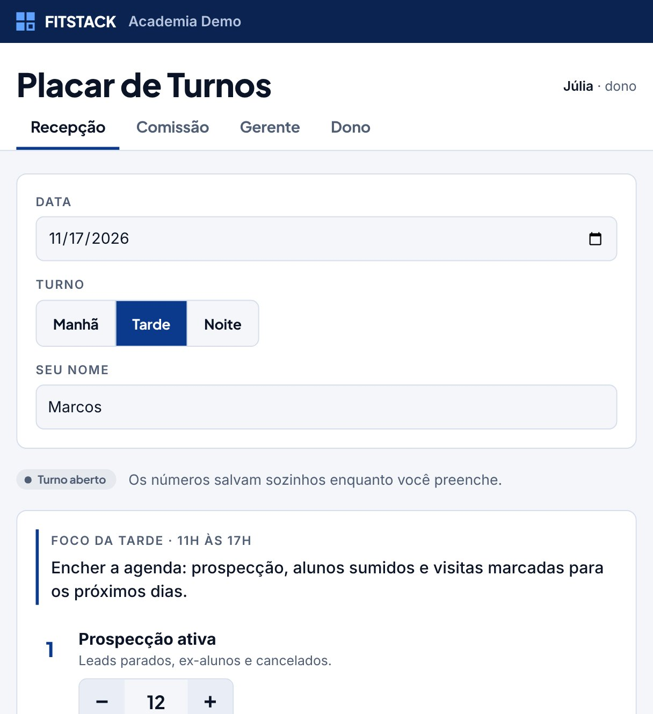
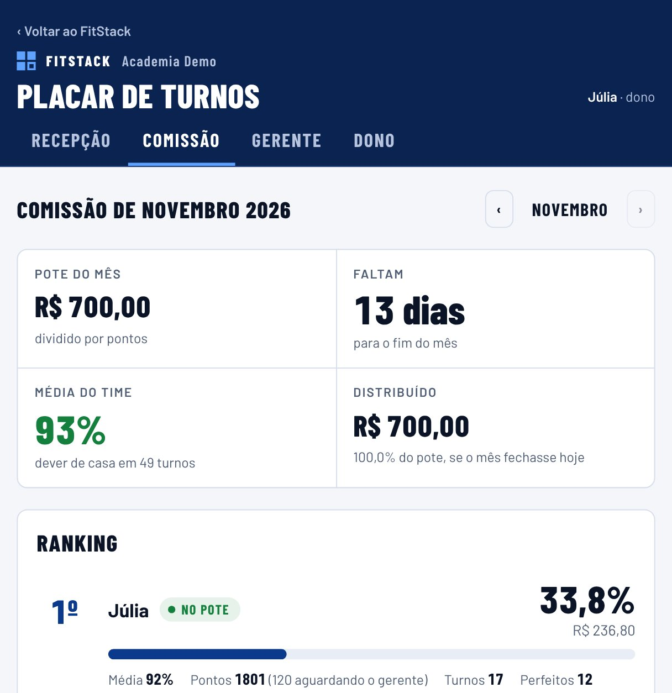

Manual da Recepção e dos Colaboradores
Passo a passo para entrar, chamar os alunos no WhatsApp, preencher o Placar do turno e entender a comissão.
- O que é o FitStack
- Sua rotina em cada turno
- Entrar pela primeira vez
- Entrar nos outros dias e "esqueci a senha"
- Contatos do dia (WhatsApp)
- Placar do turno
- Comissão: como você ganha
- Avaliações anônimas (todos os colaboradores)
- Se der problema
1.O que é o FitStack
O FitStack é o sistema da academia. Nele você faz três coisas:
| O quê | Para quê | Onde fica |
|---|---|---|
| Contatos do dia | Chamar no WhatsApp quem faz aniversário, quem sumiu, quem está devendo e quem precisa renovar. | Menu → Contatos do dia |
| Placar do turno | Marcar quantas tarefas você fez no seu turno e fechar o turno. | Menu → Placar |
| Comissão | Ver seus pontos e quanto você está ganhando no mês. | Dentro do Placar, aba Comissão |
As listas de alunos vêm do EVO sozinhas, todo dia às 5h40 da manhã. Você não precisa copiar nada do EVO.
2.Sua rotina em cada turno
Faça sempre nesta ordem. É como uma receita: não pula passo.
- Chegou Entre no FitStack (app.fitstack.com.br) com o seu e-mail e a sua senha.
- 1º Abra o Placar, confira a data e o seu turno (Manhã, Tarde ou Noite).
- 2º Leia o quadro Foco do seu turno: ele diz o que é mais importante agora.
- 3º Abra Contatos do dia e faça as listas do seu turno (veja a tabela abaixo).
- Durante A cada tarefa feita, volte no Placar e aperte + na linha certa.
- Antes de sair Preencha o Resultado do turno e a Passagem de turno.
- Fim Toque em Fechar turno antes do horário limite.
| Turno | Horário | Fechar até | O mais importante |
|---|---|---|---|
| Manhã | 5h às 11h | 11:00 | Parabéns aos aniversariantes até as 10h. Depois: cobrar inadimplentes e retornar para quem visitou e não fechou. |
| Tarde | 11h às 17h | 17:00 | Encher a agenda: prospecção, alunos sumidos e visitas marcadas para os próximos dias. |
| Noite | 17h às 23h | 23:00 | Atender bem quem chega, fechar a matrícula de quem visita e pedir indicação para quem está treinando. |
3.Entrar pela primeira vez
Você só faz isso uma vez. Antes, o dono ou o gerente te manda uma mensagem no WhatsApp com o seu e-mail e um código de 6 letras e números.
- Abra a mensagem do WhatsApp que você recebeu da academia.Uma mensagem com o endereço do site, o seu e-mail e o código. Exemplo de código: K7P2QX.
- Toque no endereço app.fitstack.com.br (ou digite ele no navegador).A tela azul do FitStack com dois botões em cima: Entrar e Primeiro acesso.
- Toque em Primeiro acesso.Um formulário com 4 campos.
- No campo Seu nome, escreva seu nome e sobrenome.Seu nome aparece no campo.
- No campo E-mail, escreva o e-mail igualzinho ao da mensagem.Se uma letra estiver diferente, não funciona.
- No campo Código de acesso, escreva as 6 letras e números da mensagem.Confira letra por letra.
- No campo Crie uma senha, invente uma senha com pelo menos 6 letras ou números. Anote num lugar seguro.A senha aparece como bolinhas.
- Toque em Criar acesso.Você entra no FitStack e vê a tela "Olá, seu nome".

4.Entrar nos outros dias e "esqueci a senha"
- Abra app.fitstack.com.br.A tela do FitStack.
- Toque em Entrar.Campos de e-mail e senha.
- Escreva seu e-mail e a sua senha.
- Toque no botão azul para entrar.A tela "Olá, seu nome" com os seus atalhos.
Esqueci a senha
- Na tela de entrar, toque em Esqueci minha senha.Um campo para o seu e-mail.
- Escreva seu e-mail e confirme.Chega um e-mail do FitStack (nao-responda@fitstack.com.br) com o assunto "Crie sua senha nova do FitStack". Olhe também a caixa de spam.
- Abra o e-mail e toque no botão dele.Uma tela para criar a senha nova.
- Crie a senha nova e entre normalmente.

5.Contatos do dia (WhatsApp)
Aqui estão as pessoas que você precisa chamar hoje. A mensagem já vem pronta. Você só confere e envia.
- No menu, toque em Contatos do dia.Uma fileira de botões redondos: Aniversários, Sumidos, Inadimplentes, Renovação, Leads, Cancelados. O número do lado é quantas pessoas tem na lista.
- Toque na lista que você vai fazer agora. Exemplo: Aniversários.Aparecem os nomes. Embaixo de cada nome tem o motivo (exemplo: "Faz 30 anos hoje").
- Se aparecer uma segunda fileira (exemplo: Hoje e Próximos 7 dias), escolha a de cima primeiro.A lista muda.
- No primeiro nome, toque no botão verde WhatsApp.O WhatsApp abre na conversa com o aluno e a mensagem já escrita.
- Leia a mensagem. Se quiser, mude uma palavra. Depois toque em enviar no WhatsApp.A mensagem vai para o aluno.
- Volte para o FitStack.O nome agora está riscado, com um ✓ verde, o seu nome e o horário. Ele foi para o fim da lista.
- Faça o mesmo com o próximo nome, até acabar a lista.Em cima aparece "X para chamar · Y já chamados hoje".

As listas, uma por uma
| Lista | Quem está nela | O que fazer |
|---|---|---|
| Salvar hoje | Os 20 alunos com maior risco de cancelar. Cada um mostra a nota de risco e o motivo: dias sem treinar, dívida, plano vencendo, aluno novo. | Comece por esta lista, todo dia. A mensagem já junta os motivos. Quem foi chamado nos últimos 7 dias sai da lista. |
| Alertas | Avisos que o EVO manda na hora: cartão recusado, boleto vencido, contrato vencendo, aluno que faltou, visita. | Chamar no mesmo dia. Cartão recusado resolvido hoje não vira atraso. |
| Aniversários | Quem faz aniversário hoje (e nos próximos 7 dias). | Mandar parabéns até as 10h. Contar no Placar em "Parabéns". |
| Sumidos | Alunos ativos que não treinam há 7 dias ou mais. Tem 4 filtros: 7 a 14 dias, 15 a 29, 30 ou mais, e quem nunca treinou. | Comece por 7 a 14 dias: é quem volta mais fácil. Contar em "Alunos sumidos contatados". |
| Inadimplentes | Quem tem mensalidade vencida. Filtro "Alunos ativos" e "Ex-alunos". Mostra o valor e há quantos dias está atrasado. | Cobrar com educação. Contar em "Inadimplentes cobrados". Se a pessoa pagar, some o valor em "R$ recuperado". |
| Renovação | Planos que vencem nos próximos 15 dias e não renovam sozinhos. | Convidar para renovar antes de vencer. |
| Leads | Pessoas que se cadastraram no mês e ainda não são alunas. | Oferecer plano ou aula experimental. Contar em "Retorno a oportunidades". |
| Cancelados | Quem cancelou no mês e o motivo. | Tentar trazer de volta com educação. |

Botões de cada nome
| Botão | O que ele faz |
|---|---|
| Abre o WhatsApp com a mensagem pronta e já marca que você chamou. | |
| Chamei | Use quando você falou com a pessoa de outro jeito (ligação, pessoalmente). Só marca, não abre o WhatsApp. |
| Desfazer | Aparece depois de marcar. Use se marcou errado. Só funciona no mesmo dia. |
| Sem celular | O aluno não tem celular cadastrado no EVO. Peça o número quando ele vier e cadastre no EVO. |

6.Placar do turno
O Placar é o seu "dever de casa" do turno. Cada linha é uma tarefa com uma meta. Você aperta + cada vez que faz uma.
- No menu, toque em Placar.Abre o "Placar de Turnos", na aba Recepção.
- Confira a Data. Tem que ser hoje.A data aparece no campo da esquerda.
- Toque no seu turno: Manhã, Tarde ou Noite.O botão fica azul. As tarefas do turno aparecem embaixo, numeradas.
- Confira o campo Seu nome.Ele já vem preenchido com o nome da sua conta.
- Leia o quadro Foco.Ele diz o que é mais importante no seu turno.
- Faça as tarefas na ordem dos números (1, 2, 3…). A cada tarefa feita, toque em + na linha dela.O número sobe, a barrinha anda e a porcentagem do lado direito ("Dever de casa do turno") aumenta.
- Apertou + sem querer? Toque em −.O número diminui.

O que cada linha quer dizer
| Tarefa | Quando conta +1 | Exemplo |
|---|---|---|
| Parabéns aos aniversariantes | Tem 2 números: em Aniversariantes hoje coloque quantos fazem aniversário (veja em Contatos do dia). Em Parabéns enviados, quantos você já mandou. | 4 aniversariantes, mandou para 4 = 100%. |
| Inadimplentes cobrados | Cada aluno devendo que você chamou. | Chamou 15 da lista = 15. |
| Retorno a oportunidades | Cada pessoa que visitou ou fez free pass e ainda não fechou, e você retornou. | Mandou mensagem para 5 visitas de ontem = 5. |
| Prospecção ativa | Cada lead parado, ex-aluno ou cancelado que você chamou. | |
| Prospecção no Instagram | Cada direct para quem curtiu, comentou ou seguiu a academia e ainda não é aluno. | |
| Alunos sumidos contatados | Cada aluno da lista de sumidos que você chamou. | |
| Visitas agendadas | Cada visita ou free pass com dia e hora marcados. | "Quinta às 18h" conta. "Vou passar aí" não conta. |
| Indicações coletadas | Cada nome e telefone de amigo de aluno, lançado no EVO como oportunidade. |
Antes de sair: Resultado e Passagem
- Em Resultado do turno, coloque com + e − quantas Visitas atendidas você teve.
- Coloque quantas Matrículas fechadas.
- Em R$ recuperado, escreva quanto os inadimplentes pagaram no seu turno. Exemplo: 129,90.Se ninguém pagou, deixe vazio.
- Em Passagem de turno (lado direito), escreva os recados para quem vem depois.Exemplo: "Maria prometeu pagar amanhã. João vem às 18h para visita. Faltou chamar 3 sumidos." Precisa de pelo menos 10 letras.
- Toque em Fechar turno.Se você fez menos de 90%, aparece uma pergunta: "Fechar assim mesmo?". Toque em Fechar assim mesmo ou em Voltar para terminar as tarefas.
- Pronto.Aparece "Turno fechado". Os números travam e o gerente vai conferir.
7.Comissão: como você ganha
Toda vez que você fecha um turno, ganha pontos. No fim do mês, um pote de dinheiro é dividido entre quem foi bem.
| Regra | Como funciona hoje |
|---|---|
| Pontos do turno | Cada turno vale até 100 pontos. É a porcentagem do seu dever de casa. 80% = 80 pontos. |
| Turno perfeito | 100% de todas as metas e fechado no horário = +20 pontos de bônus. |
| Fechou atrasado | Vale metade. |
| Não fechou | Vale zero. |
| Quem entra no pote | Só quem tiver média de 70% ou mais no mês. |
| O pote | R$ 700 por mês, dividido pelos pontos de quem entrou. |
| Limite | Ninguém leva mais que 50% do pote. |
| Quando o ponto vale | Só depois que o gerente confere o turno. Até lá aparece "aguardando o gerente". |
- No Placar, toque na aba Comissão.O ranking do mês: posição, média, pontos e quanto cada um está levando.
- Procure o seu nome.Se aparecer "Fora do pote", sua média está abaixo do mínimo. Feche mais turnos com 90% ou mais para subir.

8.Avaliações anônimas (todos os colaboradores)
Às vezes a academia manda um link de avaliação pelo WhatsApp. Pode ser para avaliar o gerente, um colega ou o clima da equipe. Professores, limpeza e manutenção também recebem.
- Toque no link que você recebeu (começa com avaliacao.fitstack.com.br).Abre a avaliação com o nome de quem está sendo avaliado. Não precisa de senha.
- Leia cada frase e escolha uma nota de 1 a 5.1 é a nota mais baixa. 5 é a mais alta.
- Se aparecer a pergunta de 0 a 10 ("quanto você indicaria…"), escolha um número.
- Escreva nos campos abertos o que você pensa de verdade.Pode deixar algum vazio.
- Toque no botão de enviar no fim.Aparece uma mensagem de agradecimento.
9.Se der problema
| Problema | O que fazer |
|---|---|
| Não consigo entrar | Confira o e-mail. Use "Esqueci minha senha". Se nunca entrou, use "Primeiro acesso" com o código. |
| Não aparece Contatos do dia ou Placar no menu | Você não tem essa permissão. Fale com o gerente. |
| A lista do Contatos do dia está vazia | A lista vem do EVO às 5h40. Se estiver vazia a tarde toda, avise o gerente. |
| O WhatsApp não abre | Confira se o WhatsApp (ou WhatsApp Web) está instalado e conectado no aparelho. |
| Apareceu "Sem conexão" | Confira a internet. Os números não se perdem: atualize a página quando a internet voltar. |
| Fechei o turno com número errado | Peça ao gerente para reabrir. |
| Esqueci de fechar ontem | Avise o gerente. Turno não fechado vale zero. |
| O nome do aluno está errado | O nome vem do EVO. Corrija no cadastro do aluno no EVO. |
Regras de ouro
- Use sempre a sua conta. Nunca entre com o login de outra pessoa, nem do gerente.
- Não passe sua senha para ninguém.
- Marque só o que você realmente fez.
- Feche o turno antes do horário limite.
- Escreva a passagem de turno com recados úteis.
- Saindo do computador da recepção? Toque em Sair.